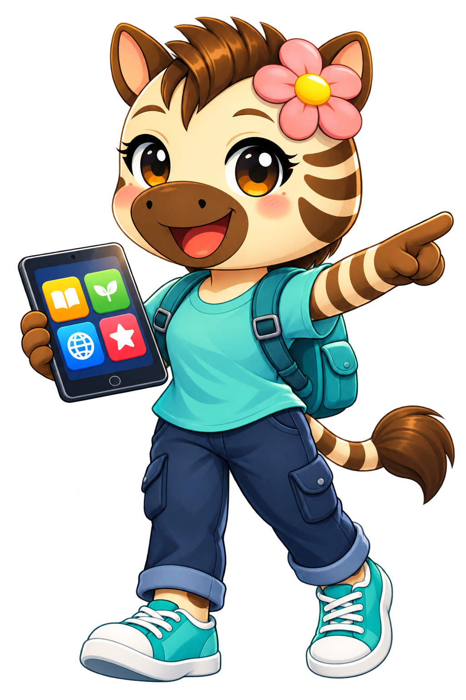

KIES JE ROUTE
Klaar voor een digitale missie?
Kies je leeftijd. Daarna helpt Zisa je stap voor stap.

JOUW MISSIES
Waar wil je beginnen?
0 / 8missiesterren
Kies je leeftijd. Daarna helpt Zisa je stap voor stap.
